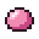

Brew guh potions in the guh brewing kettle.
Brouw guhdrankjes in de Guhbrouwketel.
The GuhbrouwketelDe Guhbrouwketel
- Stoke: put in grillspiespoeder. One portion of powder is good for 4 brews (up to 20).Stoken: doe er grillspiespoeder in. Eén keer poeder is goed voor 4 brouwsels (tot 20).
- Sauce: a bucket of kaassaus gives 3 portions of kaasbouillon.Saus: een emmer kaassaus geeft 3 porties kaasbouillon.
- Ingredient: stir one in. After 10 seconds of bubbling the brew is ready.Ingrediënt: roer er een door. Na 10 seconden pruttelen is het brouwsel klaar.
- Fill: glass bottles take out 3 potions. An empty hand shows the status.Vullen: met glazen flesjes haal je er 3 drankjes uit. Met een lege hand zie je de status.
| PotionDrankje | IngredientIngrediënt | EffectEffect |
|---|---|---|
| Speed II 3:00 + saturationSnelheid II 3:00 + verzadiging | ||
| Fire resistance 3:00Vuurbestendigheid 3:00 | ||
| Stil 2:00 (nobody hears you, see the Gatenkaasgrotten)Stil 2:00 (niemand hoort je, zie de Gatenkaasgrotten) | ||
 guh slimeball guhslijmbal | Jump boost II + slow falling 1:30Sprongkracht II + traag vallen 1:30 |